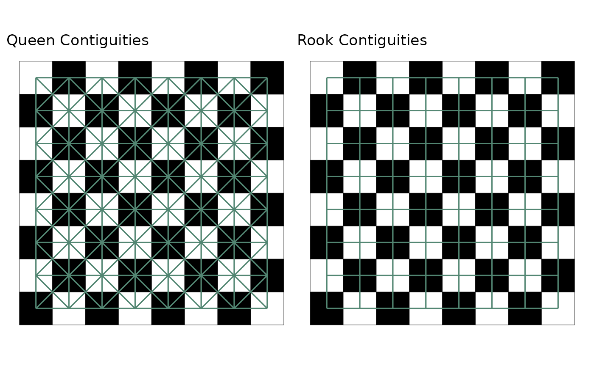
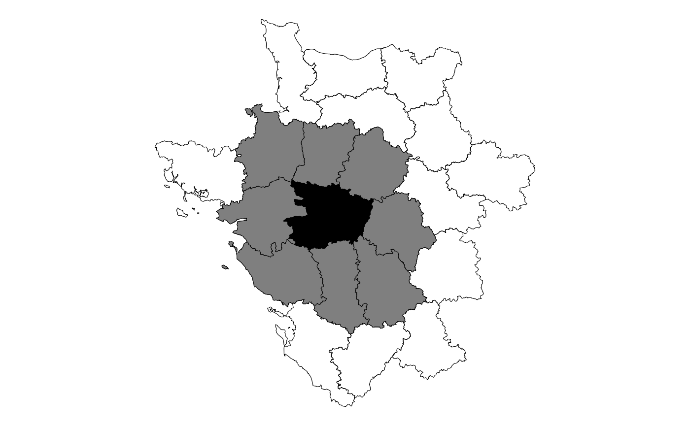
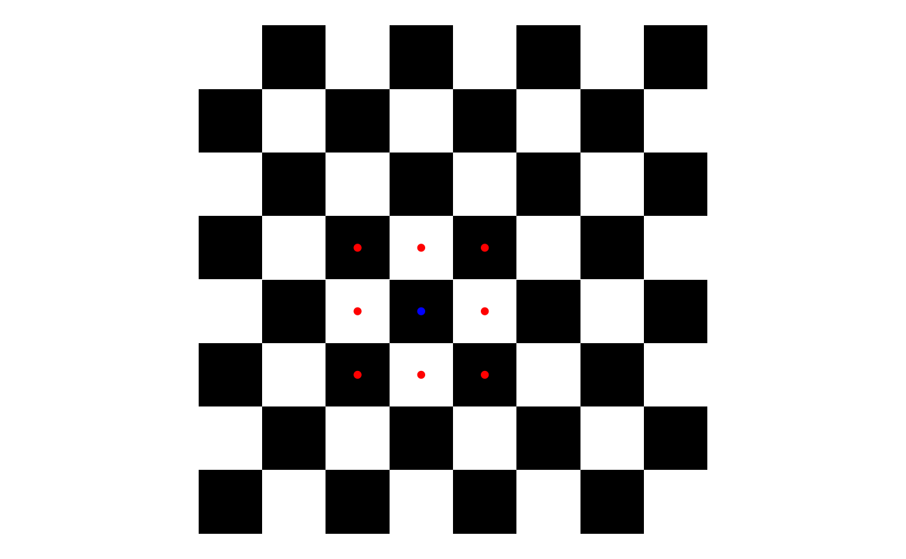

The goal of this vignette is to familiarize you with the basics of sfdep:
- creating neighbors
- creating weights
- calculating a LISA
Intro / what is spatial relationship
sfdep provides users with a way to conduct “Exploratory Spatial Data Analysis”, or ESDA for short. ESDA differs from typical exploratory data analysis in that we are strictly exploring spatial relationships. As you might have guessed, ESDA evaluates whether the phenomena captured in your data are dependent upon space–or are spatially auto-correlated. Much of ESDA is focused on “Local Indicators of Spatial Association”, LISAs for short. LISAs are measures that are developed to identify whether some observed pattern is truly random or impacted by its relationship in space.
Much of the philosophy of LISAs and ESDA are captured in Tobler’s First Law of Geography
“Everything is related to everything else. But near things are more related than distant things.” - Waldo R. Tobler, 1969
It’s tough to state this any more simply. Things that are next to each other tend to be more similar than things that are further away.
To assess whether near things are related and further things less so, we typically lattice data. A lattice is created when a landscape or region is divided into sub-areas. Most naturally, these types of data are represented as vector polygons.
Neighbors
To describe neighbors I’m going to steal extensively from my own post “Understanding Spatial Autocorrelation”.
If we assume that there is a spatial relationship in our data, we are taking on the belief that our data are not completely independent of each other. If nearer things are more related, then census tracts that are close to each other will have similar values.
In order to evaluate whether nearer things are related, we must know what observations are nearby. With polygon data we identify neighbors based on their contiguity. To be contiguous means to be connected or touching—think of the contiguous lower 48 states.
Contiguities
The two most common contiguities are based on the game of chess. Let’s take a simple chess board.
In chess each piece can move in a different way. All pieces, with the exception of the knight, move either diagonally or horizontally and vertically. The most common contiguities are queen and rook contiguities. In chess, a queen can move diagonally and horizontal and vertically whereas a rook can only move horizontal and vertically.

We extend this idea to polygons. Queen contiguities identify neighbors based on any polygon that is touching. With rook contiguities, we identify neighbors based on polygons that touch on the side. For most social science research, we only need to be concerned with queen contiguities.
While a chess board might make intuitive sense, geographies are
really wonky in real life. Below is map of the 47th observation in the
guerry object and it’s queen contiguity neighbors.

You can see that any polygon that is touching, even at a corner, will be considered a neighbor to the point in question. This will be done for every polygon in our data set.
Understanding the spatial weights
Once neighbors are identified, they can then be used to calculate
spatial weights. The typical method of calculating the
spatial weights is through row standardization
(st_weights(nb, style = "W")). Each neighbor that touches
our census tract will be assigned an equal weight. We do this by
assigning each neighbor a value of 1 then dividing by the number of
neighbors. If we have 5 neighboring census tracts, each of them will
have a spatial weight of 0.2 (1 / 5 = 0.2).
Going back to the chess board example, we can take the position d4 and look at the queen contiguities. There are 8 squares that immediately touch the square. Each one of these squares is considered a neighbor and given a value of 1. Then each square is divided by the total number or neighbors, 8.

Very simply it looks like the followingCreating Neighbors and Weights
sfdep utilizes list objects for both neighbors and weights. The neighbors and weights lists.
To identify contiguity-based neighbors, we use
st_contiguity() on the sf geometry column. And to calculate
the weights from the neighbors list, we use st_weights() on
the resultant neighbors list. By convention these are typically called
nb and wt.
These lists can be created line by line or within a pipe. The most common usecase is likely via a dplyr pipeline.
guerry_nb <- guerry %>%
mutate(nb = st_contiguity(geometry),
wt = st_weights(nb),
.before = 1) # to put them in the front
guerry_nb
#> Simple feature collection with 85 features and 28 fields
#> Geometry type: MULTIPOLYGON
#> Dimension: XY
#> Bounding box: xmin: 47680 ymin: 1703258 xmax: 1031401 ymax: 2677441
#> CRS: NA
#> # A tibble: 85 × 29
#> nb wt code_dept count ave_id_geo dept region department crime_pers
#> * <nb> <lis> <fct> <dbl> <dbl> <int> <fct> <fct> <int>
#> 1 <int [4]> <dbl> 01 1 49 1 E Ain 28870
#> 2 <int [6]> <dbl> 02 1 812 2 N Aisne 26226
#> 3 <int [6]> <dbl> 03 1 1418 3 C Allier 26747
#> 4 <int [4]> <dbl> 04 1 1603 4 E Basses-Al… 12935
#> 5 <int [3]> <dbl> 05 1 1802 5 E Hautes-Al… 17488
#> 6 <int [7]> <dbl> 07 1 2249 7 S Ardeche 9474
#> 7 <int [3]> <dbl> 08 1 35395 8 N Ardennes 35203
#> 8 <int [3]> <dbl> 09 1 2526 9 S Ariege 6173
#> 9 <int [5]> <dbl> 10 1 34410 10 E Aube 19602
#> 10 <int [5]> <dbl> 11 1 2807 11 S Aude 15647
#> # ℹ 75 more rows
#> # ℹ 20 more variables: crime_prop <int>, literacy <int>, donations <int>,
#> # infants <int>, suicides <int>, main_city <ord>, wealth <int>,
#> # commerce <int>, clergy <int>, crime_parents <int>, infanticide <int>,
#> # donation_clergy <int>, lottery <int>, desertion <int>, instruction <int>,
#> # prostitutes <int>, distance <dbl>, area <int>, pop1831 <dbl>,
#> # geometry <MULTIPOLYGON>Calculating LISAs
To calculate LISAs we typically will provide a numeric object(s), a
neighbor list, and a weights list–and often the argument
nsim to determine the number of simulations to run. Most
LISAs return a data frame of the same number of rows as the input
dataframe. The resultant data frame can be unnested, or columns hoisted
for ease of analysis.
For example to calculate the Local Moran we use the function
local_moran()
lisa <- guerry_nb %>%
mutate(local_moran = local_moran(crime_pers, nb, wt, nsim = 199),
.before = 1)
lisa
#> Simple feature collection with 85 features and 29 fields
#> Geometry type: MULTIPOLYGON
#> Dimension: XY
#> Bounding box: xmin: 47680 ymin: 1703258 xmax: 1031401 ymax: 2677441
#> CRS: NA
#> # A tibble: 85 × 30
#> local_moran$ii nb wt code_dept count ave_id_geo dept region department
#> * <dbl> <nb> <lis> <fct> <dbl> <dbl> <int> <fct> <fct>
#> 1 0.522 <int> <dbl> 01 1 49 1 E Ain
#> 2 0.828 <int> <dbl> 02 1 812 2 N Aisne
#> 3 0.804 <int> <dbl> 03 1 1418 3 C Allier
#> 4 0.742 <int> <dbl> 04 1 1603 4 E Basses-Al…
#> 5 0.231 <int> <dbl> 05 1 1802 5 E Hautes-Al…
#> 6 0.839 <int> <dbl> 07 1 2249 7 S Ardeche
#> 7 0.623 <int> <dbl> 08 1 35395 8 N Ardennes
#> 8 1.65 <int> <dbl> 09 1 2526 9 S Ariege
#> 9 -0.0198 <int> <dbl> 10 1 34410 10 E Aube
#> 10 0.695 <int> <dbl> 11 1 2807 11 S Aude
#> # ℹ 75 more rows
#> # ℹ 32 more variables: local_moran$eii <dbl>, $var_ii <dbl>, $z_ii <dbl>,
#> # $p_ii <dbl>, $p_ii_sim <dbl>, $p_folded_sim <dbl>, $skewness <dbl>,
#> # $kurtosis <dbl>, $mean <fct>, $median <fct>, $pysal <fct>,
#> # crime_pers <int>, crime_prop <int>, literacy <int>, donations <int>,
#> # infants <int>, suicides <int>, main_city <ord>, wealth <int>,
#> # commerce <int>, clergy <int>, crime_parents <int>, infanticide <int>, …Now that we have a data frame, we need to unnest it.
lisa %>%
tidyr::unnest(local_moran)
#> Simple feature collection with 85 features and 40 fields
#> Geometry type: MULTIPOLYGON
#> Dimension: XY
#> Bounding box: xmin: 47680 ymin: 1703258 xmax: 1031401 ymax: 2677441
#> CRS: NA
#> # A tibble: 85 × 41
#> ii eii var_ii z_ii p_ii p_ii_sim p_folded_sim skewness
#> <dbl> <dbl> <dbl> <dbl> <dbl> <dbl> <dbl> <dbl>
#> 1 0.522 -0.0753 0.396 0.950 0.342 0.35 0.175 -0.0363
#> 2 0.828 -0.0203 0.130 2.35 0.0185 0.03 0.015 0.156
#> 3 0.804 -0.0120 0.136 2.21 0.0272 0.05 0.025 0.269
#> 4 0.742 0.0432 0.230 1.46 0.145 0.15 0.075 -0.0116
#> 5 0.231 -0.0165 0.0336 1.35 0.177 0.19 0.095 -0.167
#> 6 0.839 -0.0190 0.298 1.57 0.116 0.1 0.05 -0.0892
#> 7 0.623 -0.246 1.39 0.736 0.462 0.44 0.22 0.271
#> 8 1.65 -0.228 1.22 1.70 0.0894 0.11 0.055 -0.0626
#> 9 -0.0198 0.00226 0.000525 -0.961 0.337 0.33 0.165 -0.0471
#> 10 0.695 -0.0399 0.0730 2.72 0.00653 0.01 0.005 -0.219
#> # ℹ 75 more rows
#> # ℹ 33 more variables: kurtosis <dbl>, mean <fct>, median <fct>, pysal <fct>,
#> # nb <nb>, wt <list>, code_dept <fct>, count <dbl>, ave_id_geo <dbl>,
#> # dept <int>, region <fct>, department <fct>, crime_pers <int>,
#> # crime_prop <int>, literacy <int>, donations <int>, infants <int>,
#> # suicides <int>, main_city <ord>, wealth <int>, commerce <int>,
#> # clergy <int>, crime_parents <int>, infanticide <int>, …This can then be used for visualization or further analysis.
Additionally, for other LISAs that can take any number of inputs, e.g. 3 or more numeric variables, we provide this as a list. Take for example the Local C statistic.
guerry_nb %>%
mutate(local_c = local_c_perm(list(crime_pers, wealth), nb, wt),
.before = 1) %>%
tidyr::unnest(local_c)
#> Simple feature collection with 85 features and 38 fields
#> Geometry type: MULTIPOLYGON
#> Dimension: XY
#> Bounding box: xmin: 47680 ymin: 1703258 xmax: 1031401 ymax: 2677441
#> CRS: NA
#> # A tibble: 85 × 39
#> ci cluster e_ci var_ci z_ci p_ci p_ci_sim p_folded_sim skewness
#> <dbl> <fct> <dbl> <dbl> <dbl> <dbl> <dbl> <dbl> <dbl>
#> 1 1.53 Positive 2.46 0.683 -1.12 0.265 0.272 0.136 0.164
#> 2 0.500 Positive 1.75 0.398 -1.98 0.0479 0.012 0.006 0.400
#> 3 0.642 Positive 1.66 0.257 -2.01 0.0442 0.032 0.016 0.203
#> 4 0.324 Positive 2.31 0.795 -2.23 0.0261 0.016 0.008 0.318
#> 5 0.298 Positive 2.29 0.872 -2.14 0.0325 0.016 0.008 0.278
#> 6 1.60 Positive 3.36 0.779 -1.99 0.0469 0.052 0.026 0.0419
#> 7 2.04 Positive 3.22 1.67 -0.907 0.364 0.424 0.212 0.317
#> 8 2.20 Positive 3.36 1.92 -0.838 0.402 0.428 0.214 0.328
#> 9 0.507 Positive 1.69 0.375 -1.92 0.0544 0.044 0.022 0.230
#> 10 1.46 Positive 1.76 0.469 -0.434 0.664 0.712 0.356 0.453
#> # ℹ 75 more rows
#> # ℹ 30 more variables: kurtosis <dbl>, nb <nb>, wt <list>, code_dept <fct>,
#> # count <dbl>, ave_id_geo <dbl>, dept <int>, region <fct>, department <fct>,
#> # crime_pers <int>, crime_prop <int>, literacy <int>, donations <int>,
#> # infants <int>, suicides <int>, main_city <ord>, wealth <int>,
#> # commerce <int>, clergy <int>, crime_parents <int>, infanticide <int>,
#> # donation_clergy <int>, lottery <int>, desertion <int>, instruction <int>, …